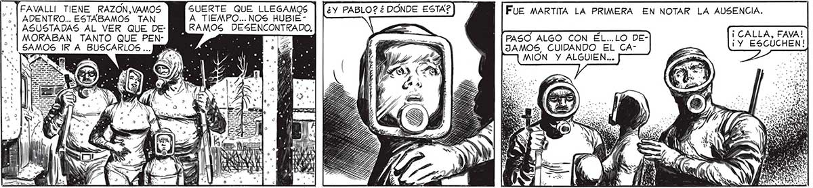
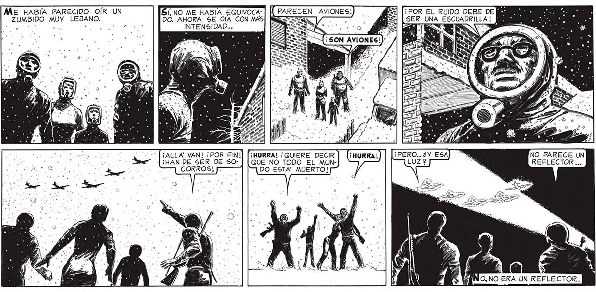

SUERTE QUE LLEGAMOS A TIEMPO... NOS HUBIERAMOS DESENCONTRADO, FAVALLI TIENE RAZON,VAMOS . | ADENTRO... ESTABAMOS TAN +] ASUSTADAS AL VER QUE DE- [BN “¿| MORABAN TANTO QUE PENSAMOS IR A BUSCARLOS... , PASO ALGO CON ÉL..LO DEJAMOS, CUIDANDO EL CA- | ¡Y_ ESCUCHEN: —]MION Y ALGUIEN... 7 el a (¿y PABLO? ¿ DÓNDE ESTA? FUE MARTITA LA PRIMERA EN NOTAR LA AUSENCIA. | A ¡ CALLA, FAVA! Me HABÍA PARECIDO OÍR UN SI, NO ME HABÍA EQUIVOCA- A ¡POR EL RUIDO DEBE DE ZUMBIDO MUY LEJANO. DO. AHORA SE OIA CON MAS z SER UNA ESCUADRILLA ! MS po 6 oa A INTENSIDAD... She ¿E ¡ i y ¡ALLA' VAN! ¡POR FIN!] [¡HURRA! ¡QUIERE DECIR ¡ mm Y NO PARECE UN ¡HAN DE SER DE S0O- ] [QUE NO TODO EL MUN- , $ REFLECTOR ..o COKROS! DO ESTA” MUERTO! >

